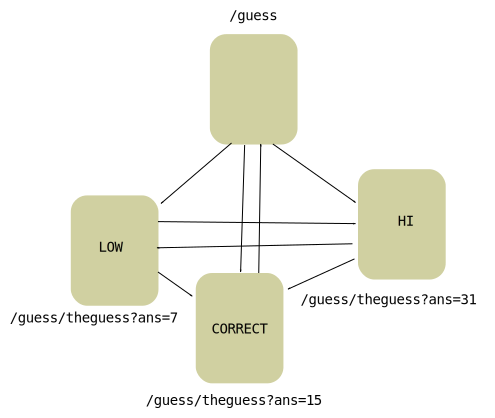

HEAD /~rod/ HTTP/1.0 HTTP/1.1 200 OK Date: Mon, 04 Feb 2013 21:40:18 GMT Server: Apache Last-Modified: Mon, 04 Feb 2013 11:48:28 GMT ETag: "8d82c1-c72-4d4e4abdf1b00" Accept-Ranges: bytes Content-Length: 3186 Connection: close Content-Type: text/html
Web browsers communicate with web servers using the HTTP protocol. The formal definition is given by RFC-2616: Hypertext Transfer Protocol -- HTTP/1.1. This protocol follows the client/server model where the browser is the client making a request and the web server is the server providing the reply.
An example protocol exchange made with telnet www.cs.mun.ca 80 :
HEAD /~rod/ HTTP/1.0 HTTP/1.1 200 OK Date: Mon, 04 Feb 2013 21:40:18 GMT Server: Apache Last-Modified: Mon, 04 Feb 2013 11:48:28 GMT ETag: "8d82c1-c72-4d4e4abdf1b00" Accept-Ranges: bytes Content-Length: 3186 Connection: close Content-Type: text/html
The red text is the request and the blue text is the reply. The server closes the connection after sending the reply.
A small http server is started at port 8080 on the localhost.
Telnet is also used to make the following request with the command:
telnet 127.0.0.1 8080
The user types the following lines after running telnet:
HEAD /foo/bar/xx HTTP/1.0
The blank line indicates the end of the request header. Each line is terminated by a CR and a LF (abbreviated as CRLF). A LF is also accepted.
HEAD /foo/bar/xx HTTP/1.0 HTTP/1.1 404 Not Found Content-Type: text/html <h1>404 Not Found</h1>
A request contains a series of lines. The first line follows the form:
method path protocol-version
where protocol-version specifies the HTTP version (1.0 or 1.1), path is the rest of the URL after the hostname, and method is:
A series of header lines follows the request line. More content can follow the header lines. This content is separated by a blank line.
The reply line follows the form:
protocol-version status code text-description-of-status
For example,
HTTP/1.1 200 OK
HTTP/1.0 is the other possible version.
Header lines can follow the response line. The content is separated by a blank line.
Common codes include:
A header line contains an attribute name, a colon (:), and an attribute value terminated by a CRLF. An example of the reply header lines is:
Date: Mon, 04 Feb 2013 21:40:18 GMT Server: Apache Last-Modified: Mon, 04 Feb 2013 11:48:28 GMT Accept-Ranges: bytes Content-Length: 3186 Connection: close Content-Type: text/html
Some of the more common header lines requests/respones are:
MIME: Multipurpose Internet Mail Extensions
MIME was initially created for the transmission and reception of non-text e-mail (e.g., images, programs ...).
When a web server transmits a file to a browser using the HTTP protocol it also sends the MIME type of the file. The MIME type controls how the browser handles the file. All files must have an associated MIME type, the browser will prompt the user if the MIME type is unknown.
A list of registered mime types is maintained by the Internet Assigned Numbers Authority (IANA). A mine type is composed of two parts separated by a slash. The first part gives the general media type (e.g., text, image) and the second part gives the specific format (e.g., text/html, text/plain, image/jpeg, image/png).
The MIME type for a HTML file/document is:
text/html
A plain text file is:
text/plain
A file containing HTML tags, but sent as text/plain would be displayed as a straight text file.
The XHTML MIME type is
application/xhtml+xml
Any XML document, including XHTML, can also be described with these MIME types.
application/xml or text/xml
Mime types for common image formats are:
image/bmp
image/gif
image/jpeg
image/png
image/tiff
When a browser reads a local file it uses the file extension to determine its MIME type. Under Linux the file, /etc/mime.types, specifies the mapping between file extensions and MIME types. A subset of the contents is:
application/ogg ogg
application/x-tex tex
application/xhtml+xml xhtml xht
application/xml
application/xml-dtd
application/xml-external-parsed-entity
application/zip zip
audio/mpeg mpga mp2 mp3
audio/x-pn-realaudio ram rm
audio/x-wav wav
image/bmp bmp
image/gif gif
image/jpeg jpeg jpg jpe
image/png png
image/tiff tiff tif
model/vrml wrl vrml
multipart/form-data
multipart/mixed
text/css css
text/html html htm
text/plain asc txt
text/sgml sgml sgm
text/x-setext etx
text/xml xml xsl
video/mpeg mpeg mpg mpe
video/quicktime qt mov
video/x-msvideo avi
Write a Java program to output the HTTP request from a browser. The program can be written using a server socket.
Socket sock = listen.accept();
Scanner sc = new Scanner( sock.getInputStream() );
PrintStream ps = new PrintStream(sock.getOutputStream(),false);
// get request
if ( !sc.hasNextLine() ) {
ps.close();
sc.close();
sock.close();
continue;
}
String line = sc.nextLine();
String[] words = line.split("\\s+");
// print request header on console
System.out.println( "Request header" );
System.out.println( line );
while ( sc.hasNextLine() ) {
line = sc.nextLine();
if ( line.length() == 0 ) break; // end of header
System.out.println( line );
}
if ( words[1].equals("/favicon.ico") ) { // possible bug?
sendNotFound( ps );
}
else {
sendReply( words[1], ps );
}
ps.close();
sc.close();
sock.close();
This code is almost identical to the LineServer.
The not found reply is generated by:
public static void sendNotFound( PrintStream ps ) {
ps.println("HTTP/1.0 404 Not Found");
ps.println("Connection: close");
ps.println(); // end of header
ps.flush();
}
A HTTP response containing a HTML page is generated by:
public static void sendReply( String path, PrintStream ps ) {
ps.println("HTTP/1.0 200 OK");
ps.println("Connection: close");
ps.println("Content-Type: text/html; charset=utf-8");
ps.println(); // end of header
ps.println("<html>");
ps.println("<body>");
ps.println("<pre>" + "path: " + path + "</pre>");
ps.println("<pre>" + new Date() + "</pre>");
ps.println("</body>");
ps.println("</html>");
ps.flush();
}
The HTTP protocol has not been correctly implemented by the above code. What is missing? Why does it still work?
A very very simple web server.
import java.io.IOException;
import java.io.PrintStream;
import java.net.ServerSocket;
import java.net.Socket;
import java.util.Date;
import java.util.Scanner;
public class HttpRequestViewer {
public static void sendNotFound( PrintStream ps ) {
ps.println("HTTP/1.0 404 Not Found");
ps.println("Connection: close");
ps.println(); // end of header
ps.flush();
}
public static void sendReply( String path, PrintStream ps ) {
ps.println("HTTP/1.0 200 OK");
ps.println("Connection: close");
ps.println("Content-Type: text/html; charset=utf-8");
ps.println(); // end of header
ps.println("<html>");
ps.println("<body>");
ps.println("<pre>" + "path: " + path + "</pre>");
ps.println("<pre>" + new Date() + "</pre>");
ps.println("</body>");
ps.println("</html>");
ps.flush();
}
public static void main( String[] args ) {
try {
int port = Integer.parseInt( args[0] );
ServerSocket listen = new ServerSocket( port );
while ( true ) {
Socket sock = listen.accept();
Scanner sc = new Scanner( sock.getInputStream() );
PrintStream ps = new PrintStream(sock.getOutputStream(),false);
// get request
if ( !sc.hasNextLine() ) {
ps.close();
sc.close();
sock.close();
continue;
}
String line = sc.nextLine();
String[] words = line.split("\\s+");
// print request header on console
System.out.println( "Request header" );
System.out.println( line );
while ( sc.hasNextLine() ) {
line = sc.nextLine();
if ( line.length() == 0 ) break; // end of header
System.out.println( line );
}
if ( words[1].equals("/favicon.ico") ) { // possible bug?
sendNotFound( ps );
}
else {
sendReply( words[1], ps );
}
ps.close();
sc.close();
sock.close();
}
}
catch( IOException e ) {
System.out.println("error: " + e );
}
}
}
The programs output for the requests:
% java HttpRequestViewer 12999
Request header
GET /hello HTTP/1.1
Host: localhost:12999
Connection: keep-alive
Accept: text/html,application/xhtml+xml,application/xml;q=0.9,image/webp,*/*;q=0.8
User-Agent: Mozilla/5.0 (X11; Linux x86_64) AppleWebKit/537.36 (KHTML, like Gecko) Chrome/32.0.1700.107 Safari/537.36
Accept-Encoding: gzip,deflate,sdch
Accept-Language: en-US,en;q=0.8
Request header
GET /favicon.ico HTTP/1.1
Host: localhost:12999
Connection: keep-alive
Accept: */*
User-Agent: Mozilla/5.0 (X11; Linux x86_64) AppleWebKit/537.36 (KHTML, like Gecko) Chrome/32.0.1700.107 Safari/537.36
Accept-Encoding: gzip,deflate,sdch
Accept-Language: en-US,en;q=0.8
Request header
GET /bye HTTP/1.1
Host: localhost:12999
Connection: keep-alive
Accept: text/html,application/xhtml+xml,application/xml;q=0.9,image/webp,*/*;q=0.8
User-Agent: Mozilla/5.0 (X11; Linux x86_64) AppleWebKit/537.36 (KHTML, like Gecko) Chrome/32.0.1700.107 Safari/537.36
Accept-Encoding: gzip,deflate,sdch
Accept-Language: en-US,en;q=0.8
The general form for a URL is:
protocol://host/path#name?query
Included as part of Java's API is the com.sun.net.httpserver package. This package can be used to created small embedded web servers.
This example contains the files: FaviconHandler.javaEchoHandler.java and EchoMain.java. The example can be compiled and run with:
% javac EchoMain.java FaviconHandler.java EchoHandler.java
% java EchoMain
This server will handle the URLs starting with:
This code is designed to illustrate the URL and header information sent by the browser.
The http://localhost:8080/echo produces
Method=GET
Remote=/127.0.0.1:34519
URI=/echo/
URI path=/echo/
URI query=null
Headers:
Host = [localhost:8080]
Accept-encoding = [gzip, deflate]
Connection = [keep-alive]
Accept-language = [en-US,en;q=0.5]
User-agent = [Mozilla/5.0 (X11; Linux x86_64; rv:27.0) Gecko/20100101 Firefox/27.0]
Accept = [text/html,application/xhtml+xml,application/xml;q=0.9,*/*;q=0.8]
counter = 1
The browser is using the GET method to fetch the document. The browsers is also telling the server that it can handling gzip and deflate encodings. It will also accept all the MIME types found in the Accept header.
The http://localhost:8080/echo/foo produces
Method=GET
Remote=/127.0.0.1:34520
URI=/echo/foo
URI path=/echo/foo
URI query=null
Headers:
Host = [localhost:8080]
Accept-encoding = [gzip, deflate]
Connection = [keep-alive]
Accept-language = [en-US,en;q=0.5]
User-agent = [Mozilla/5.0 (X11; Linux x86_64; rv:27.0) Gecko/20100101 Firefox/27.0]
Accept = [text/html,application/xhtml+xml,application/xml;q=0.9,*/*;q=0.8]
counter = 2
In com.sun.net.httpserver package, any URL that starts with /echo is handled by the EchoHandler class.
The http://localhost:8080/echo/foo?a=1&b=2 produces
Method=GET
Remote=/127.0.0.1:34521
URI=/echo/foo?a=1&b=2
URI path=/echo/foo
URI query=a=1&b=2
Headers:
Host = [localhost:8080]
Accept-encoding = [gzip, deflate]
Connection = [keep-alive]
Accept-language = [en-US,en;q=0.5]
User-agent = [Mozilla/5.0 (X11; Linux x86_64; rv:27.0) Gecko/20100101 Firefox/27.0]
Accept = [text/html,application/xhtml+xml,application/xml;q=0.9,*/*;q=0.8]
counter = 3
Notice that the counter keeps incrementing by 1.
The source code of the server is:
import java.io.IOException;
import java.net.InetSocketAddress;
import java.util.concurrent.Executors;
import com.sun.net.httpserver.Headers;
import com.sun.net.httpserver.HttpExchange;
import com.sun.net.httpserver.HttpHandler;
import com.sun.net.httpserver.HttpServer;
public class EchoMain {
public static void main(String[] args) throws IOException {
InetSocketAddress addr = new InetSocketAddress(8080);
HttpServer server = HttpServer.create(addr, 5); // backlog is 5
// route on /echo and /favicon.ico
server.createContext("/jetty/requests/auth", new EchoHandler());
server.createContext("/jetty/echo", new EchoHandler());
server.createContext("/jetty/favicon.ico", new FaviconHandler());
server.setExecutor(Executors.newCachedThreadPool());
server.start();
System.out.println("Server is listening on port 8080" );
}
}
The URL routing is specified with:
server.createContext("/echo", new EchoHandler());
server.createContext("/favicon.ico", new FaviconHandler());
A cached thread pool is set up with:
server.setExecutor(Executors.newCachedThreadPool());
The server is started with:
server.start();
import java.io.IOException;
import java.io.PrintWriter;
import java.net.InetSocketAddress;
import java.net.URI;
import java.net.URLDecoder;
import java.util.Iterator;
import java.util.List;
import java.util.Set;
import java.util.Date;
import com.sun.net.httpserver.Headers;
import com.sun.net.httpserver.HttpExchange;
import com.sun.net.httpserver.HttpHandler;
import com.sun.net.httpserver.HttpServer;
public class EchoHandler implements HttpHandler {
private int counter = 0;
public void handle(HttpExchange exchange) throws IOException {
counter++;
// setup the reply
Headers responseHeaders = exchange.getResponseHeaders();
responseHeaders.set("Content-Type", "text/plain");
exchange.sendResponseHeaders(200, 0);
PrintWriter responseBody = new PrintWriter( exchange.getResponseBody());
// report http info
String requestMethod = exchange.getRequestMethod();
responseBody.println( "Method=" + requestMethod );
InetSocketAddress remote = exchange.getRemoteAddress();
responseBody.println("Remote=" + remote );
URI uri = exchange.getRequestURI();
responseBody.println("URI=" + uri );
responseBody.println("URI path=" + uri.getPath() );
responseBody.println("URI query=" + uri.getQuery());
// log request
System.out.println("Handling: " + (new Date()) + ":" + uri );
responseBody.println("Headers:" );
Headers requestHeaders = exchange.getRequestHeaders();
Set<String> keySet = requestHeaders.keySet();
Iterator<String> iter = keySet.iterator();
while (iter.hasNext()) {
String key = iter.next();
List values = requestHeaders.get(key);
responseBody.println( key + " = " + values.toString() );
}
responseBody.println( "counter = " + counter );
responseBody.close();
}
}
The EchoHandler.handler instance method is invoked everytime the web server receives a URL that starts with /echo.
Both the http request and http response information or control is found in the HttpExchange object.
The content type of the response is set with:
responseHeaders.set("Content-Type", "text/plain");
The status code is set with:
exchange.sendResponseHeaders(200, 0);
The writer used to generate the response is created with:
PrintWriter responseBody = new PrintWriter( exchange.getResponseBody());
The rest of the code produces the response text.
A receipt of a /favicon.ico URL causes a 404 reply, which is handled by
import java.io.IOException;
import java.io.OutputStream;
import java.io.OutputStreamWriter;
import java.io.PrintWriter;
import java.net.InetSocketAddress;
import java.net.URI;
import java.net.URLDecoder;
import java.util.Iterator;
import java.util.List;
import java.util.Set;
import java.util.Date;
import com.sun.net.httpserver.Headers;
import com.sun.net.httpserver.HttpExchange;
import com.sun.net.httpserver.HttpHandler;
import com.sun.net.httpserver.HttpServer;
public class FaviconHandler implements HttpHandler {
public void handle(HttpExchange exchange) throws IOException {
// setup the reply
Headers responseHeaders = exchange.getResponseHeaders();
responseHeaders.set("Content-Type", "text/plain");
exchange.sendResponseHeaders(404, 0);
PrintWriter responseBody = new PrintWriter( exchange.getResponseBody());
responseBody.println( "Not Found" );
responseBody.close();
// log request
URI uri = exchange.getRequestURI();
System.out.println("Handling Favicon: " + (new Date()) + ":" + uri );
System.out.println("Headers:" );
Headers requestHeaders = exchange.getRequestHeaders();
Set<String> keySet = requestHeaders.keySet();
Iterator<String> iter = keySet.iterator();
while (iter.hasNext()) {
String key = iter.next();
List values = requestHeaders.get(key);
System.out.println( key + " = " + values.toString() );
}
}
}
Information about the request is printed to the console that the server is run from.
Web page can also contain images. Here is a web server that creates and returns colour dots.
import java.io.IOException;
import java.net.InetSocketAddress;
import java.util.concurrent.Executors;
import com.sun.net.httpserver.Headers;
import com.sun.net.httpserver.HttpExchange;
import com.sun.net.httpserver.HttpHandler;
import com.sun.net.httpserver.HttpServer;
public class DotMain {
public static void main(String[] args) throws IOException {
InetSocketAddress addr = new InetSocketAddress(8080);
HttpServer server = HttpServer.create(addr, 0);
server.createContext("/favicon.ico", new FaviconHandler());
server.createContext("/dotpage", new ColorDotsHandler());
server.setExecutor(Executors.newCachedThreadPool());
server.start();
System.out.println("Server is listening on port 8080" );
}
}
The ColorDotsHandler objects handles any URL that starts with /dotpage.
The web page returned by the URL /dotpage is
<html>
<head>
<title>Image</title>
<body>
<a href='http://localhost:8080/dotpage'>
<img src='http://localhost:8080/dotpage/dot'>
</a>
</body>
</html>
An image is returned with /dotpage/dot URL.
The handler code is:
import java.io.IOException;
import java.io.OutputStream;
import java.io.PrintWriter;
import java.util.Date;
import java.net.URI;
import javax.imageio.ImageIO;
import java.awt.image.BufferedImage;
import java.awt.Graphics2D;
import java.awt.Color;
import com.sun.net.httpserver.Headers;
import com.sun.net.httpserver.HttpExchange;
import com.sun.net.httpserver.HttpHandler;
public class ColorDotsHandler implements HttpHandler {
private int index = 0;
private Color[] colours = {Color.RED, Color.GREEN, Color.BLUE};
public void handle(HttpExchange exchange) throws IOException {
URI uri = exchange.getRequestURI();
// log request
System.out.println("Handling: " + (new Date()) + ":" + uri );
String path = uri.getPath();
if ( path.equals("/dotpage") ) {
Headers responseHeaders = exchange.getResponseHeaders();
responseHeaders.set("Content-Type", "text/html");
exchange.sendResponseHeaders(200, 0);
PrintWriter page = new PrintWriter( exchange.getResponseBody());
page.println(
"<html><head><title>Image</title><body>" +
"<a href='http://localhost:8080/dotpage'>" +
"<img src='http://localhost:8080/dotpage/dot'>" +
"</a>" +
"</body></html>"
);
page.close();
}
else {
Headers responseHeaders = exchange.getResponseHeaders();
responseHeaders.set("Content-Type", "image/jpg");
exchange.sendResponseHeaders(200, 0);
BufferedImage img =
new BufferedImage(640,480, BufferedImage.TYPE_3BYTE_BGR);
Graphics2D g2d = img.createGraphics();
g2d.setPaint( Color.white );
g2d.fillRect( 0, 0, 640, 480 );
g2d.setPaint( colours[ index] );
g2d.fillOval( 90, 10, 460, 460 );
OutputStream out = exchange.getResponseBody();
ImageIO.write(img, "jpg", out );
out.flush();
out.close();
index++;
if ( index >= colours.length ) {
index = 0;
}
}
}
}
Design a web site that allows a user to play the hi/lo guessing games. One approach is to decide on the webpages and how each page can be reached from other pages.
A picture of a possible set of pages is:
All of the guess result pages are reached by the /guess/theguess form link.
Welcome, guess
<html>
<head>
<title>Guess Number</title>
<body>
<p>Guess a number between 1 and 32</p>
<form action='/guess/theguess'>
<input type='text' name='ans'>
</form>
</body>
</html>
Correct guess
<html>
<head>
<title>Guess Response</title>
<body>
<p>Correct</p>
<p><a href='/guess'>next guess</a></p>
</body>
</html>
Too low guess
<html>
<head>
<title>Guess Number</title>
<body>
<p>Too low! Guess again</p>
<form action='/guess/theguess'>
<input type='text' name='ans'>
</form>
</body>
</html>
Too high guess
<html>
<head>
<title>Guess Number</title>
<body>
<p>Too high! Guess again</p>
<form action='/guess/theguess'>
<input type='text' name='ans'>
</form>
</body>
</html>
import java.io.IOException;
import java.io.OutputStream;
import java.io.OutputStreamWriter;
import java.io.PrintWriter;
import java.net.URI;
import java.util.Random;
import java.util.Date;
import com.sun.net.httpserver.Headers;
import com.sun.net.httpserver.HttpExchange;
import com.sun.net.httpserver.HttpHandler;
import com.sun.net.httpserver.HttpServer;
public class GuessHandler implements HttpHandler {
private Random random = new Random();
private int currentGuess = 0;
public void handle(HttpExchange exchange) throws IOException {
// setup the reply
Headers responseHeaders = exchange.getResponseHeaders();
responseHeaders.set("Content-Type", "text/html");
exchange.sendResponseHeaders(200, 0);
PrintWriter responseBody = new PrintWriter( exchange.getResponseBody());
URI uri = exchange.getRequestURI();
String path = uri.getPath();
// log request
System.out.println("Handling: " + (new Date()) + ":" + uri );
if ( path.equals("/guess") ) {
currentGuess = random.nextInt(32) + 1;
responseBody.println(
"<html><head><title>Guess Number</title><body>" +
"<p>Guess a number between 1 and 32</p>" +
"<form action='/guess/theguess'>" +
"<input type='text' name='ans'>" +
"</form></body></html>"
);
}
else if ( path.contains("/guess/theguess") ) {
String query = uri.getQuery();
if ( query.contains("ans=") ) {
String[] words = query.split("=");
try {
int i = Integer.parseInt( words[1] );
if ( i == currentGuess ) {
responseBody.println(
"<html><head><title>Guess Response</title><body>" +
"<p>Correct</p>" +
"<p><a href='/guess'>next guess</a></p>" +
"</body></html>"
);
}
else if ( i > currentGuess ) {
responseBody.println(
"<html><head><title>Guess Number</title><body>" +
"<p>Too high! Guess again</p>" +
"<form action='/guess/theguess'>" +
"<input type='text' name='ans'>" +
"</form></body></html>"
);
}
else {
responseBody.println(
"<html><head><title>Guess Number</title><body>" +
"<p>Too Low! Guess again</p>" +
"<form action='/guess/theguess'>" +
"<input type='text' name='ans'>" +
"</form></body></html>"
);
}
}
catch( NumberFormatException ex ) {
responseBody.println(
"<html><head><title>Bad Number</title><body>" +
"<p>Bad number! Guess again</p>" +
"<form action='/guess/theguess'>" +
"<input type='text' name='ans'>" +
"</form></body></html>"
);
}
}
else {
responseBody.println(
"<html><head><title>Bad Guess Request</title><body>" +
"<p>Invalid Request</p>" +
"</body></html>"
);
}
}
responseBody.close();
}
}
The main method is:
import java.io.IOException;
import java.net.InetSocketAddress;
import java.util.concurrent.Executors;
import com.sun.net.httpserver.Headers;
import com.sun.net.httpserver.HttpExchange;
import com.sun.net.httpserver.HttpHandler;
import com.sun.net.httpserver.HttpServer;
public class GuessMain {
public static void main(String[] args) throws IOException {
InetSocketAddress addr = new InetSocketAddress(8080);
HttpServer server = HttpServer.create(addr, 0);
server.createContext("/guess", new GuessHandler());
server.createContext("/favicon.ico", new FaviconHandler());
server.setExecutor(Executors.newCachedThreadPool());
server.start();
System.out.println("Server is listening on port 8080" );
}
}
The combined web server is built with:
% javac ColorDotsHandler.java EchoHandler.java FaviconHandler.java GuessHandler.java HttpDemo1.java
% java HttpDemo1
Ant can be used to build and run this demo.
<?xml version="1.0"?>
<project name="javacc" default="run">
<!-- ant 1.8 work around -->
<presetdef name="javac">
<javac includeantruntime="false" />
</presetdef>
<property name="package.dir" value="."/>
<property name="dest.dir" value="classes"/>
<target name="init">
<mkdir dir="${dest.dir}"/>
</target>
<target name="clean">
<delete dir="${dest.dir}" />
<mkdir dir="${dest.dir}" />
</target>
<target name="compile" depends="init">
<javac
srcdir="${package.dir}" destdir="${dest.dir}">
<compilerarg value="-Xlint:unchecked"/>
<include name="*.java"/>
</javac>
</target>
<target name="run" depends="compile">
<java classname="HttpDemo1" fork="true">
<classpath>
<pathelement path="classes"/>
</classpath>
</java>
</target>
</project>
Ant can be used to create, and then run this application with:
% ant clean # remove generated stuff
% ant compile # compile the source code
% ant run
Only ant run is required.
The HttpDemo1 class implements four web applications
and uses the com.sun.net.httpserver.HttpServer
built-in web server.
The path name part of the URL is mapped to the following handlers.
import java.io.IOException;
import java.net.InetSocketAddress;
import java.util.concurrent.Executors;
import com.sun.net.httpserver.Headers;
import com.sun.net.httpserver.HttpExchange;
import com.sun.net.httpserver.HttpHandler;
import com.sun.net.httpserver.HttpServer;
public class HttpDemo1 {
public static void main(String[] args) throws IOException {
InetSocketAddress addr = new InetSocketAddress(8080);
HttpServer server = HttpServer.create(addr, 0);
server.createContext("/echo", new EchoHandler());
server.createContext("/favicon.ico", new FaviconHandler());
server.createContext("/guess", new GuessHandler());
server.createContext("/dotpage", new ColorDotsHandler());
server.setExecutor(Executors.newCachedThreadPool());
server.start();
System.out.println("Server is listening on port 8080" );
}
}
The interaction between a web browser and a server can be summarized as: